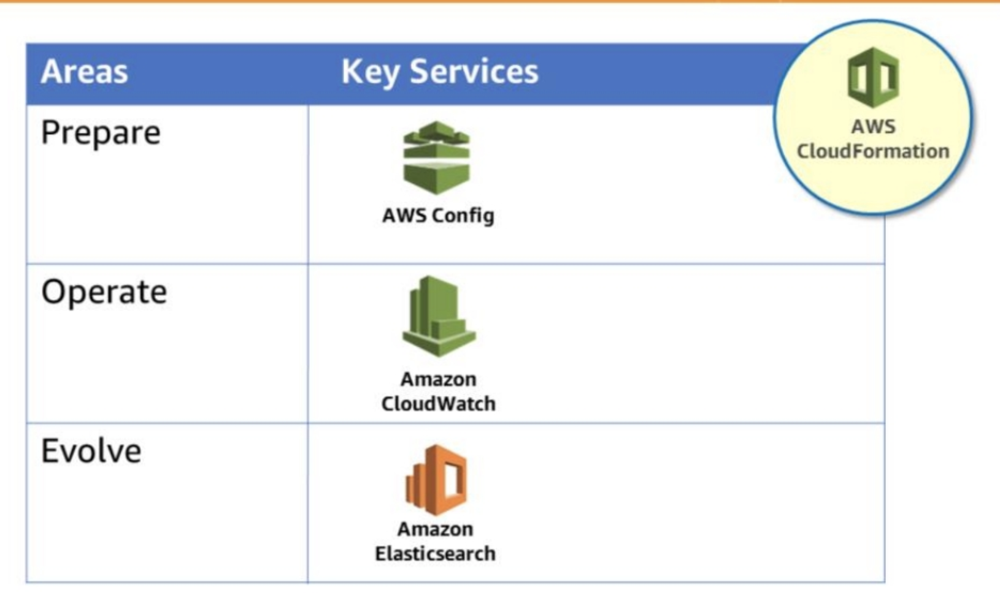

Design Principles
- Perform Operations with code
- Annotate document changes: automate the creation of documentation after every build, or you can automatically annotate (注解) hand-crafted documentation. Annotated documentation can be used by people and systems. Use annotations as an input to your operations code
- Make frequent, small, reversible changes: You want to design workloads to allow components to be updated regularly.
- Refine standard operations frequently
- Anticipate failure: pre-mortem (事前验尸)
- Learn from all operational failures
Core Services

- AWS CloudFormation is key for operational excellence because it helps you ensure reliability. The service lets you treat infrastructure as code, and it provides templates you can use to replicate your environment.
- To prepare, AWS Config and AWS Config Rules can be used to create standards for workloads, and to determine whether environments are compliant with those standards before they are put into production.
- CloudWatch allows you to monitor the operational health of a workload.
- Amazon Elasticsearch Service allows you to analyze your log data to gain actionable insights quickly and securely.